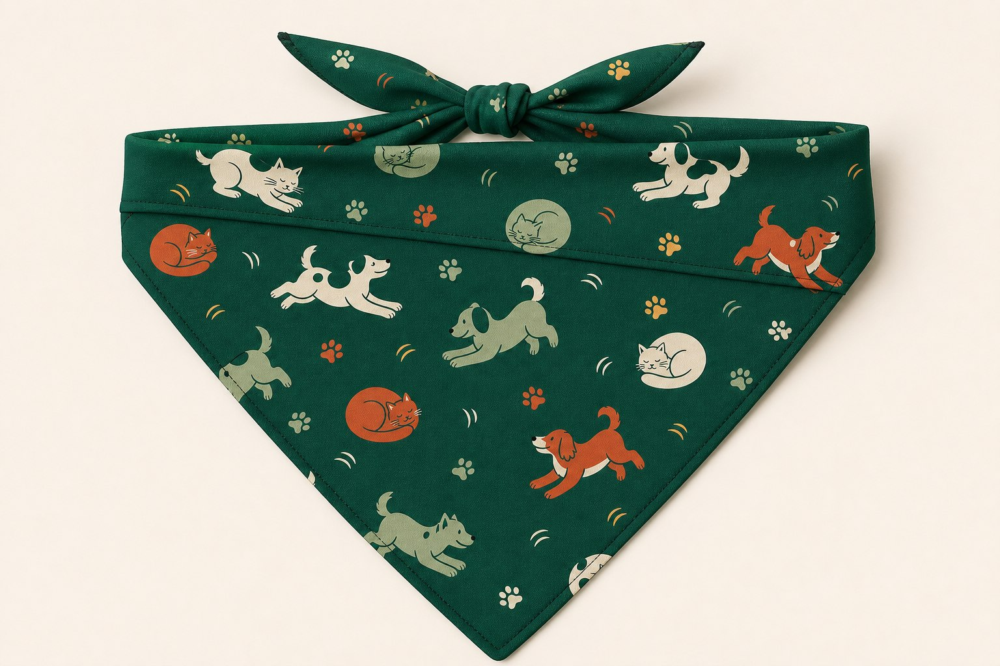

Leave comfortable room
Check the fit after tying and again after the dog moves. If the knot, fold, or fabric looks restrictive, remove it and choose a larger square or a different fold.
Fold, tie, check
A square bandana becomes a triangle, then a narrower neck accessory. Folding and knotting consume fabric, so begin with the actual square measurements rather than the size letter alone.

Five steps
Fit check
Check the fit after tying and again after the dog moves. If the knot, fold, or fabric looks restrictive, remove it and choose a larger square or a different fold.
A tied bandana is not a collar or restraint. Do not attach a leash to it or rely on it for identification or control.
Remove the bandana if it shifts, catches on something, becomes wet or damaged, or the dog scratches at it or otherwise appears bothered.
Before tying
The Pet Parade supplier measurements are S 17 3/8 in (44 cm), M 21 1/4 in (54 cm), and L 25 1/4 in (64 cm), measured square before folding and tying. Size labels are not universal across brands.
Share this guide
These links open the selected service directly. PawSwipe does not load social-media SDKs, pixels, or cookies on this page.